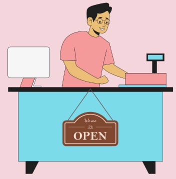
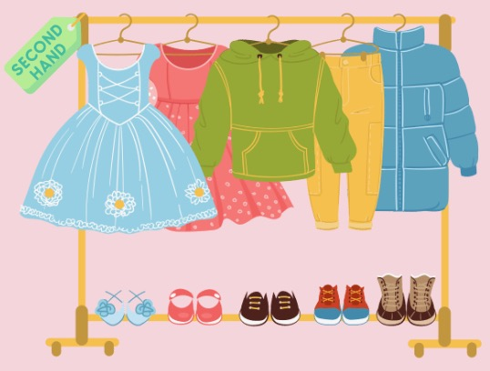
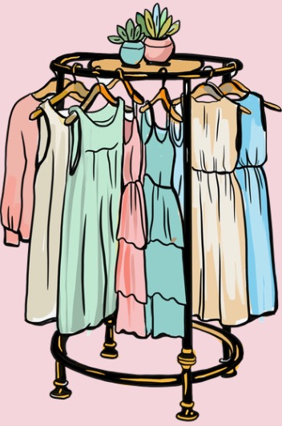
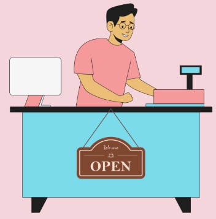
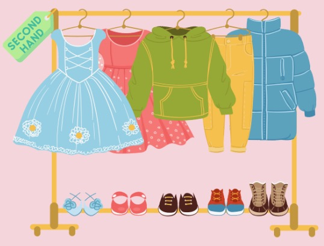
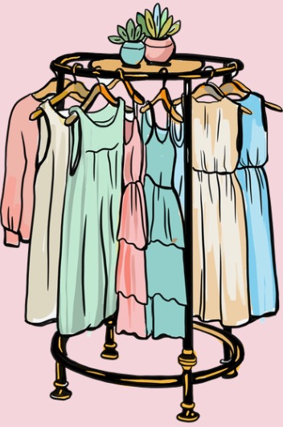

Welcome to Nana's Attic! How can I help you today?
This children’s pieces came from the late 1970s through the 1990s.
Clothing like this was popular for its bold colors, durable fabrics,
and playful patterns. They were common in everyday school outfits and
weekend outings. It was typically worn by kids who grew up during the
retro era of hand-me-downs, outdoor activities, and practical fashion.
These dresses came from a boutique that carried styles from the 1980s to the early
2000s. Dresses like this were especially popular for casual gatherings, school
dances, and picnics. They were often worn by young adults who loved
expressive prints, soft fabrics, and the mix of retro and early-2000s aesthetics.